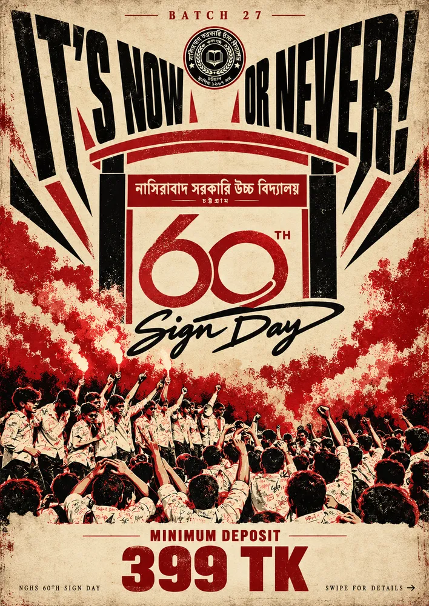

NGHS 60th Sign Day: thank you for being part of it
NGHS ৬০তম সাইন ডে: পাশে থাকার জন্য ধন্যবাদ
Batch 27’s milestone gathering happened on Thursday, 12 November. A thank-you to everyone who made the day meaningful.
ব্যাচ ২৭-এর স্মরণীয় আয়োজনটি হয়েছিল বৃহস্পতিবার, ১২ নভেম্বর। দিনটিকে অর্থবহ করে তোলার জন্য সবাইকে আন্তরিক ধন্যবাদ।
Read the story বিস্তারিত পড়ুন